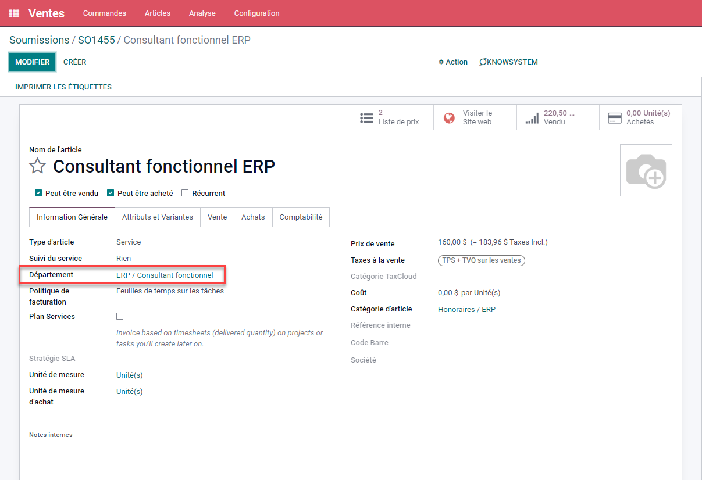
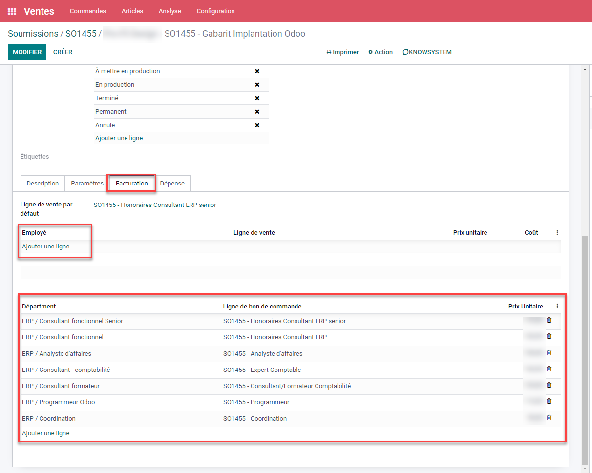
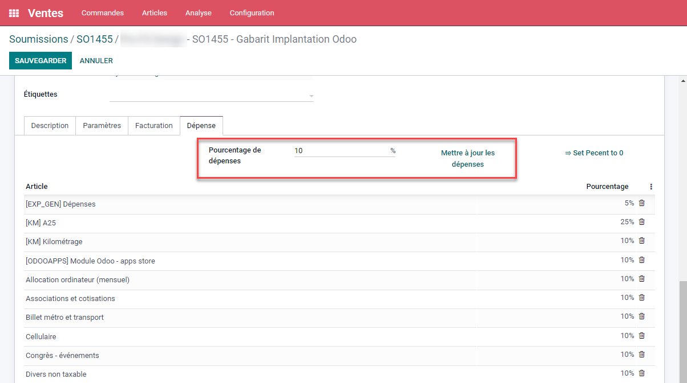
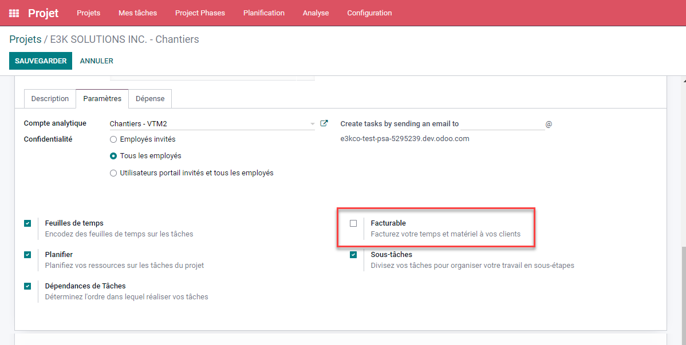
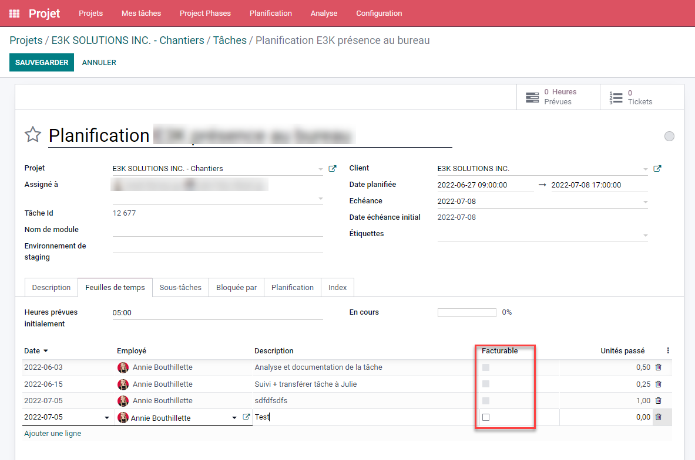
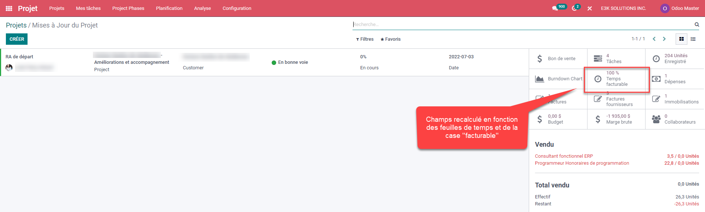
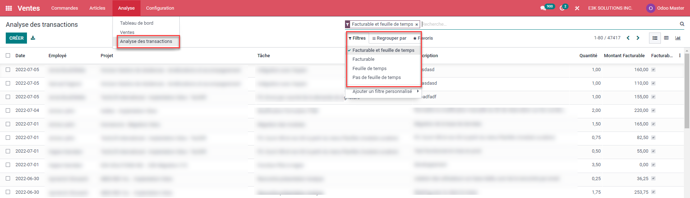
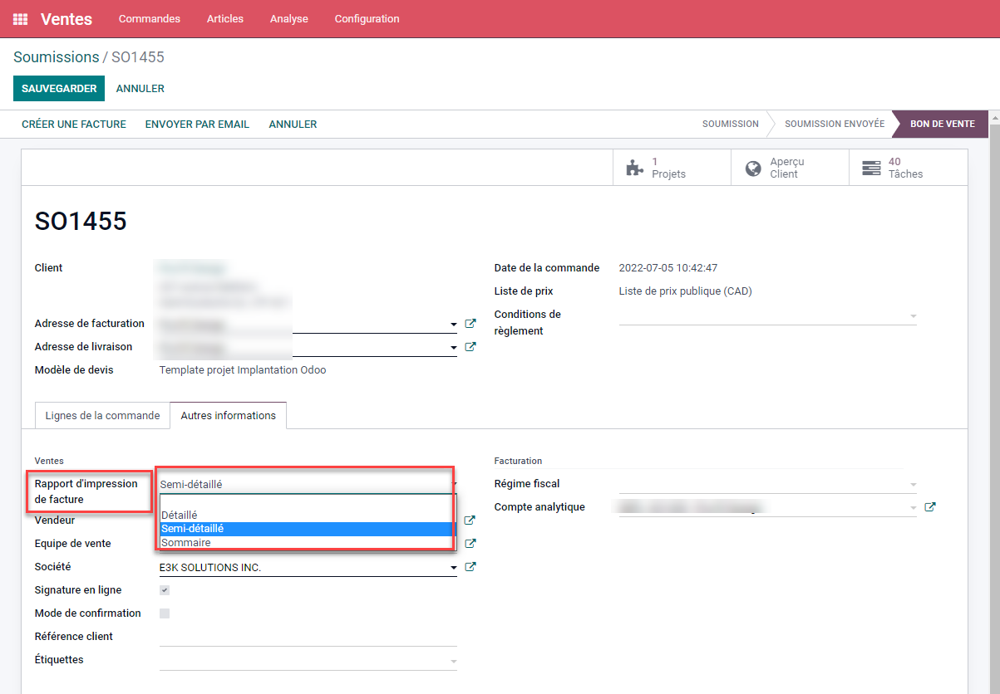
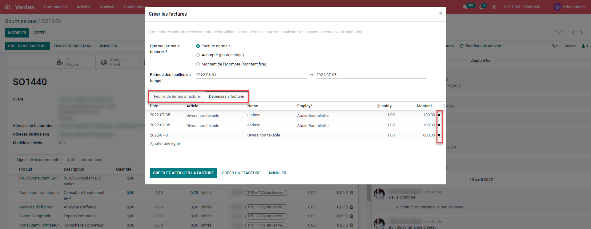

Automatisme facturation
Le module ajoute la possibilité de lier un produit de type service facturable sur feuille de temps à un département. De cette façon, lors de la création d'un bon de commande qui crée un projet (fonction native de odoo), le paramétrage de la facturation du projet se fera automatiquement.


De plus, le tableau employé, plus haut, permettra d'outrepasser la configuration de son département. Un employé pourrait donc etre a un taux différent dans un projet spécifique que le reste des membre du même département que lui.
Refacturation des dépenses
Un tableau a été ajouté afin de pouvoir refacturer avec un pourcentage supplémentaire défini des produits de type note de frais, qu'ils soient entrée via la comptabilité ou via la module note de frais.
Le bouton ''mettre à jour les dépenses'' ajoutera au tableau tous les article de type ''note de frais'' avec la configuration ''Pourcentage de dépenses''. Il est possible de changer la configuration par article ou d'ajouter un article dans la tableau manuellement.

Projets non facturable
Un projet qui est créé directement à partir de l'application projet et qui n'est pas coché ''facturable'' fera en sorte que l'ajout d'une feuille de temps pour ce projet sera par défaut ''non facturable''


Calcul du pourcentage de feuille de temps facturable mise à jour dans les rapport de statut de projet

Ajout d'une vue d'analyse des transactions.
Dans le module vente, le module ajoute une vue d'analyse des transaction avec diverses options de filtre et groupement qui permet d'analyser l'avancement de travaux en cours.

Sélection de différent type de factures
Dans le bon de commande, il est possible de choisir un type de facture spécifique. Il sera ensuite possible de le modifier par facture si désiré.

Choix des éléments à facturer
Finalement, lors de la facturation, un tableau affiche l'ensemble des feuilles de temps et dépenses qui seront liés à cette facture. Il est possible de supprimer certaines lignes afin de les facturer ultérieurement.

|